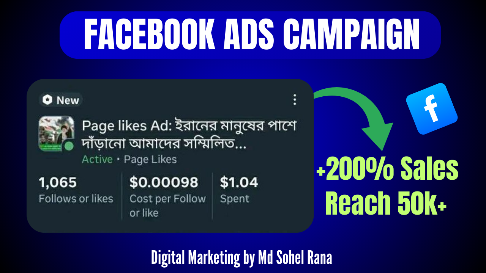
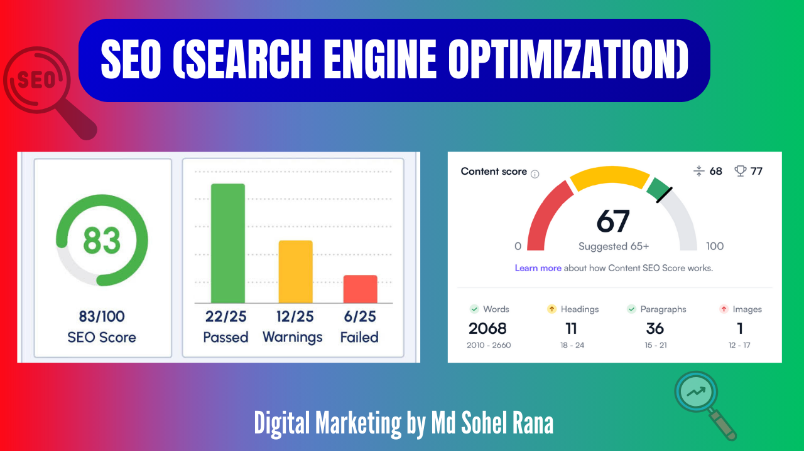

Featured Work
Some of my recent projects

Facebook Ads & Marketing
Increased business ROI through targeted ads, creative design, and continuous optimization.

YouTube SEO & Channel Growth
Boosted channel views and subscribers with video optimization and content strategy.

Website SEO & Increase Traffic
Improved organic traffic with custom SEO strategies and on-page/off-page optimization.

YouTube Thumbnail Design
Enhanced campaign performance with paid ads and conversion-focused strategies.
Google Ads Campaign
Enhanced campaign performance with paid ads and conversion-focused strategies.
Organic Follower Growth
Grew real followers through authentic engagement strategies.
T-shirt Graphic PNG
Delivered trendy, print-ready designs that increased product appeal.